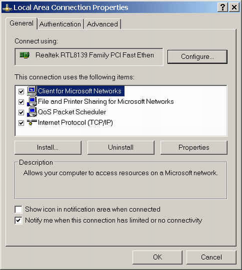

This describes how to set the IP address of the LMT PC. This topic takes the connection between the LMT PC and the BSC through LAN as an example.
Prerequisite
The IP address, mask, and default gateway are fixed.
Context
When the network segment of the LMT PC changes, you need to reset the IP address of the LMT PC.
The principles for setting the IP address of the LMT PC are as follows:
- When the LMT PC and GBAM communicate through LAN, the IP address of the LMT PC and the external IP address of the GBAM must be located in the same network segment, in the following way:
- When the LMT PC and the server communicate through routers, the two IP address can be in different network segments.
The following procedure takes the Microsoft Windows XP Professional operating system as an example.
Procedure
- On the LMT PC, choose and double-click .
- Right-click the LMT local area connection to be set and click Property from the shortcut menu. A dialog box is displayed, as shown in Figure 1.
Figure 1 Local Area Connection Properties dialog box
- On the General tab page, select Internet Protocol (TCP/IP).
- Click Internet Protocol (TCP/IP), and then click Properties. A dialog box is displayed, as shown in Figure 2.
Figure 2 Internet Protocol (TCP/IP) Properties dialog box
- On the General tab page, click Use the following IP address. Set the IP Address to be in the same network segment where the external IP address of the GBAM/GOMU is located. Set the Subnet mask and Default gateway to be the same as the subnet mask and default gateway of the server.
- Click Use the following DNS server addresses and set the IP address of the DNS server to be the same as that of the server.
- Click OK to return to the dialog box shown in Figure 1.
- Click OK to complete the setting.
Copyright © Huawei Technologies Co., Ltd.